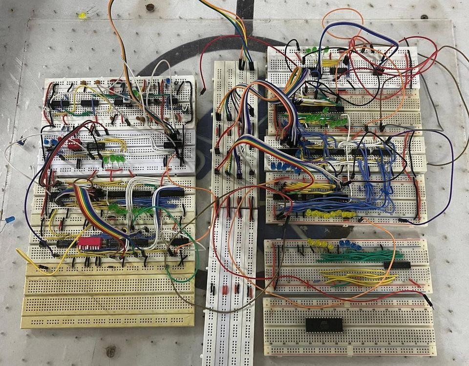
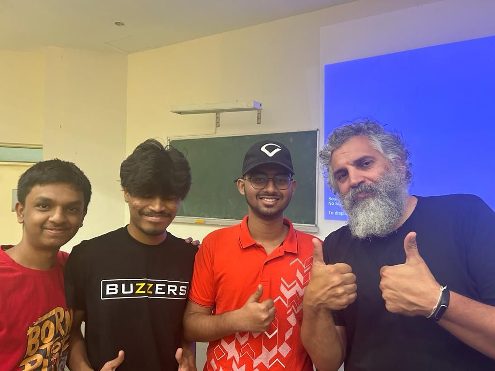
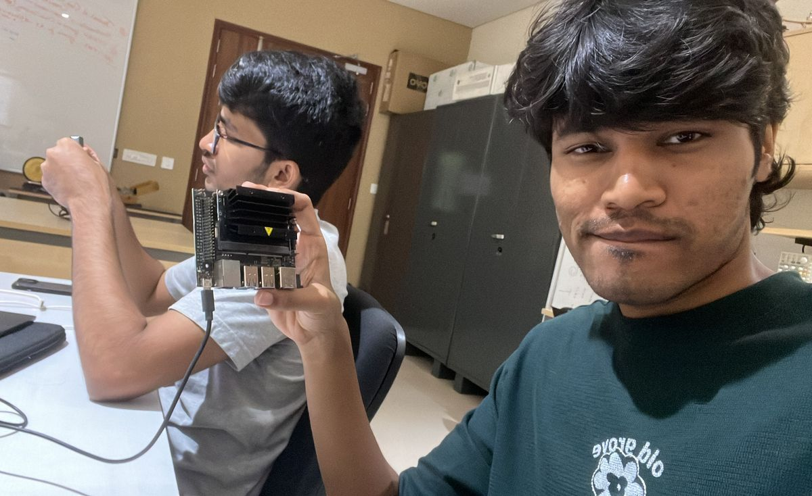
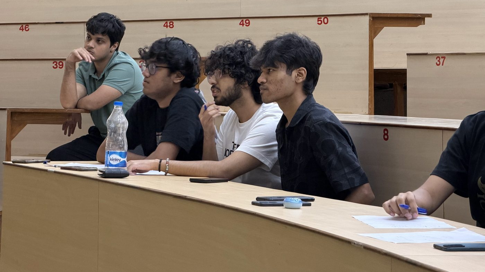
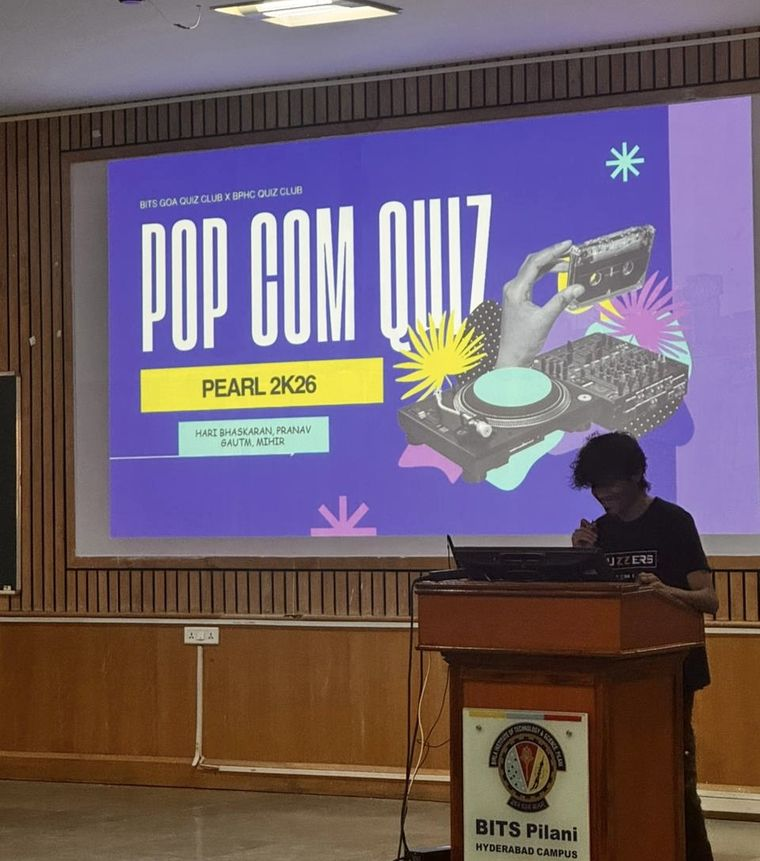
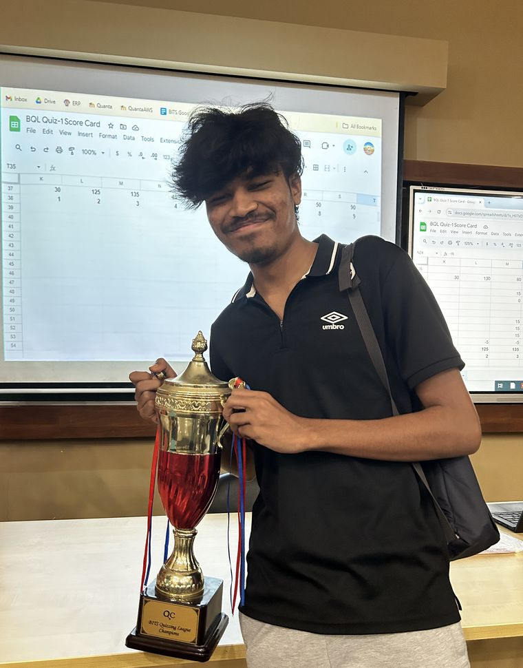

I design and verify digital hardware at BITS Pilani Goa, and I'm building EdgeOS with five others. The rest of the time I'm writing quiz questions or out on a long run.
Looking for 2027 silicon internships — RTL, DV, EDASilicon
B.E. Electronics & Instrumentation, '27Aegis
Open-source RTL timing closure that won't touch a synchronizer it can't prove safe
An LLM suggests timing fixes, and Aegis doesn't trust any of them. Before the model sees the design, a structural pass reads the RTL and SDC. It finds synchronizer chains, Gray-coded pointers, reset crossings and clock dividers and locks them with checksums. Every candidate then has to pass a fixed series of checks, and failing any one of them gets it rejected outright, not just scored lower:
- Checksum gateDid it touch a locked region? If so, it's rejected before anything else runs.
- Lint & simulationDoes it still build and behave the same?
- Yosys EQYSequential equivalence against the original design.
- CDC re-checkThe structural pass runs again on the new RTL.
- Per-domain STAOpenSTA measures WNS/TNS separately for each clock, so a gain in one domain can't hide a regression in another.
clk_a and sampled on an unrelated clk_b can settle to either value. Equivalence checkers don't model metastability, so they can't catch this. You have to catch it from the circuit's structure.Tested on designs from multi-clock FIFOs and handshakes up to AXI/Wishbone bridges, Ethernet and a small SoC. On the SoC, Aegis kept top-level equivalence, cut area by 3.43%, and closed one clock domain's timing deficit. The other domain's deficit is still open, and the report says so.
It grew out of an earlier, simpler LangGraph + Gemini loop that rewrote RTL and checked each iteration with Yosys, OpenSTA, Verilator and EQY, but had no structural guardrails.
More hardware
-
Hardware design automation for CNNs
A 4×4 output-stationary systolic array on 16 DSP48 slices: INT8 multiply, INT32 accumulate. It sits as an AXI4-Lite peripheral on a Zynq-7000, with im2col and DMA handled on the host side.
The ModelGen flow takes a trained Keras model (MNIST, grayscale CIFAR-10) and exports its weights and biases as memory files for the hardware. It also dumps every layer's intermediate output, so the RTL can be checked layer by layer, not just on the final answer.
-
Multi-metric kNN accelerator
Euclidean, Manhattan, Hamming and cosine distance share one ALU, and switching between them costs no cycles. Cosine is a similarity, so higher means closer, while the other three are distances. The datapath negates the cosine score in two's complement, so one find-the-minimum top-K sorter works for all four, with no bidirectional sorter to pay for.
Reference vectors are normalised once, offline in Python, and scaled to INT8, so the FPGA never computes a square root or a division. 2.1× faster than a CPU on Artix-7. Submitted to VLSID 2027.
-
FIFO verification environment
A self-checking SystemVerilog testbench for a parameterisable synchronous FIFO. It has a driver, a passive monitor, a scoreboard that checks against a golden reference queue, SVA assertions bound onto the DUT, and functional coverage. Eight directed tests (reset, overflow, underflow, pointer wrap) run, followed by a 500-cycle constrained-random regression.
-
Gati, upstream fixes
Gati is Vicharak's open-source INT8 CNN inference engine for FPGAs. I fixed three bugs in its test infrastructure, all now merged: stimulus being silently truncated by a width mismatch, a non-blocking assignment racing in combinational logic, and a reset-release bug that hid real failures.
-
A small OS for RISC-V
A kernel written from scratch in C for 32-bit RISC-V, with process management, system calls, a simple file system, a user library and a shell.
-
RailOps AI
Rail sensor data streamed through Kafka into a model that predicts failure risk and remaining useful life, with automatic dispatch and a live dashboard. Built in four weeks by a team of four. We came 2nd of 97 teams.
Kafka · ML2026


Papers
-
Multi-Metric kNN Hardware Accelerator on FPGA
K. Hari Bhaskaran, D. Pal
VLSID 2027submitted -
Structural guardrails for model-proposed RTL transformation
K. Hari Bhaskaran
in preparation
EdgeOS
Startup · BITS Pilani GoaLike Vercel, for edge AI
Upload a model and EdgeOS optimises it, deploys it and keeps it running on real hardware
Cloud developers don't provision servers anymore. They push, and the platform does the rest. Edge AI has nothing like that. Getting a model onto a Jetson means hand-tuning TensorRT. Moving to a different NPU means rewriting drivers and build scripts. Pushing an update to a device in the field can brick it, with no way to roll back.
We're building that missing layer. You upload a PyTorch, ONNX or TensorFlow model, and EdgeOS:
- OptimisesConverts and quantises the model for the target: TensorRT, OpenVINO, FP16 or INT8.
- PackagesBuilds a container image for the device.
- DeploysPushes updates over the air with canary checks, and rolls back automatically if one fails.
- MonitorsShows CPU, memory and inference performance for every device on one dashboard.
We're starting narrow, with NVIDIA Jetson, which most early robotics and vision prototypes run on. The first goal is to cut deployment from days to minutes. After that come Intel, Qualcomm, AMD and Hailo NPUs. There are six of us. I bring the FPGA neural-network accelerator side, and I've been testing EdgeOS on Jetson hardware.

Quizzing
Coordinator, BITS Goa Quiz ClubI'm a competitive quizzer and I coordinate the BITS Goa Quiz Club. That means writing questions, hosting quizzes, and taking a team out to compete.
A good question works like a good testbench. You can't guess it, but you can work it out from what you already know.
Here are a few I like. Try them before you hit reveal.



Running
Hyderabad MarathonI'm training for the Hyderabad Marathon: 42.195 km, building mileage week by week. Planning a training block is a lot like timing closure. Find what's slowing you down, fix that, and don't break anything else.
Experience
-
Co-founder, EdgeOS
Edge AI deployment infrastructure, starting with NVIDIA Jetson.
current -
Open-source contributor, Vicharak
RTL and verification infrastructure for Gati, an FPGA DNN inference accelerator.
Jan 2026 — -
Embedded intern, C-DAC Hyderabad
CNN pipeline with unsupervised feature extraction on time-series telemetry, profiled and compressed to run on edge hardware.
May — Aug 2025 -
Undergraduate researcher, BITS Pilani Goa
Accelerator micro-architecture with Prof. Vipin Kizheppatt: systolic arrays, SoC integration, and the kNN accelerator.
Jan 2024 — May 2025